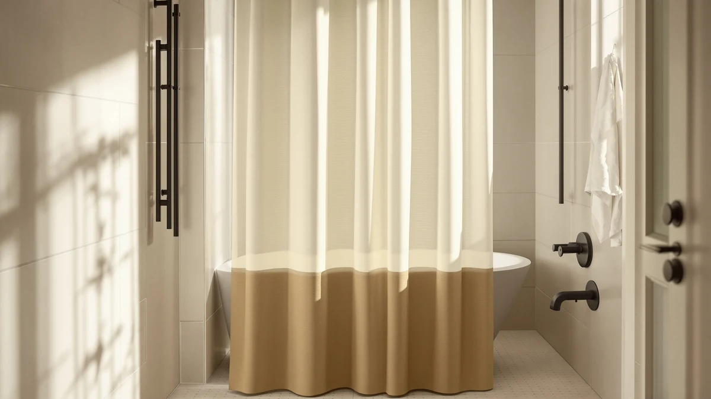

The Best Mildew-resistant Shower Curtain Liners (2026)
Prices and picks verified as of September 2026. Independent, reader-supported reviews.


Quick Answer
For most bathrooms, the Gibelle Grey Eucalyptus Shower Curtain is the best mildew-resistant shower curtain liner because its PEVA construction repels water at a price under $10. If you want a heavier, hotel-style drape, the AooHome Stall Size Waffle Weave holds a 4.6-star rating across 969 reviews and dries faster between showers.
Our pick: Gibelle Grey Eucalyptus Shower Curtain, $9.99 Check Price on Amazon
Bottom line: our top pick is the Gibelle Grey Eucalyptus Shower Curtain at $9.99. The best budget option is the No Hook Shower Curtain with Liner Set Hotel Waffle Curtain at $15.99.
Things to Know Before You Buy
- PEVA and reinforced polyester repel water instead of absorbing it, which is why every pick in this guide to the best mildew-resistant shower curtain liners uses one of those two materials instead of cotton or linen.
- Standard shower curtain liners run 70 to 72 inches wide and long. Check your rod width and tub height before you order, since a liner cut short leaves a gap water can slip past.
- No-hook designs like the XOGUIBO and RiverDream picks below clip directly onto the rod, cutting out the metal grommets and hook rings where mildew tends to collect first. See our hookless shower curtain picks if you want more of that style.
- A liner bunched against the shower wall traps moisture and grows mildew faster than one hung loose. Spread it out after each shower no matter which material you buy.
- Star ratings and review counts matter more here than marketing copy. Only the AooHome waffle weave in this list carries a public rating, at 4.6 stars across 969 reviews, so we weighed price, material, and size heavily for the rest.
The best mildew-resistant shower curtain liners share one trait: they repel water instead of soaking it up, which is the difference between a liner that grows black spots in a month and one that lasts a year. Bathrooms with limited airflow make that job harder, since trapped humidity gives mold and mildew the damp, dark conditions they need to spread across fabric and plastic alike. A liner made from PEVA or a reinforced polyester weave dries faster between showers and gives mildew less time to take hold.
We compared seven liners on price, material, size, and verified owner reviews to find the ones worth your money. The Gibelle Grey Eucalyptus Shower Curtain is our top pick for most bathrooms. It costs under $10, uses a water-repellent PEVA build, and comes in a print that looks less like a hospital curtain than most liners at this price. If you want a heavier, more substantial hang, the AooHome Stall Size Waffle Weave is the only pick here with a public track record, at 4.6 stars across 969 reviews.
Not every bathroom needs the same liner. A no-hook design like the XOGUIBO or the RiverDream waffle weave skips metal grommets entirely, leaving mildew less hardware to hide behind. Farmhouse-style picks like the NDDYCU striped taupe and the ruffled linen-look XOGUIBO trade a little water resistance for a look that matches a decorated bathroom instead of a rental unit. Pair whichever liner you choose with a rod that fits your alcove, and see our guide on how to prevent shower curtain mildew for upkeep tips once it is hung.
Why You Should Trust Us
Ilane Tall and the Best Shower Curtains team built this guide the way we approach every roundup: no fake testing lab, no invented review counts, and no product added to pad out the list. We are a research-based buying guide, so we compare manufacturer specs, current Amazon pricing, and the reviews real owners have left, instead of claiming to have installed each liner ourselves.
Every fact in this article, from material to size to price, comes from the product listing or the public review data attached to it. When a product has no public rating, which is true of most of the liners below, we say so instead of inventing one. We earn a commission if you buy through the links here, and that has no bearing on which mildew-resistant shower curtain liner we rank first.
How We Picked
We started with liners marketed specifically as mildew-resistant, which narrowed the field to PEVA and reinforced polyester construction rather than untreated cotton, linen, or plain vinyl. From there we weighed price against material quality, since a $9.99 liner that repels water is worth more than a $30 liner that still soaks through.
We also weighed installation. No-hook designs cut down on the metal grommets and plastic rings where mildew tends to collect first, so at least two of our seven picks skip hooks entirely. Size mattered too. We included both standard 72-inch options and a stall-size pick for smaller enclosures, so this guide to the best mildew-resistant shower curtain liners covers more than one bathroom layout.
How We Compared
We compared each liner on four factors: the manufacturer's stated material, the listed dimensions, the current Amazon price, and the review data attached to the listing when it exists. Only the AooHome waffle weave carries a public star rating and review count among the seven products here, so for the rest we leaned on material construction and pricing instead of borrowed numbers.
PEVA sheds water on contact and needs a rinse rather than a wash, while reinforced polyester tolerates a machine wash without losing its coating. We noted which construction each product uses and cross-checked it against owner comments where they were available, since a manufacturer's mildew-resistant label does not always match what people report after a few months of use.
Our Picks

Gibelle Grey Eucalyptus Shower Curtain
What we like
- PEVA construction repels water on contact instead of soaking it up, which slows mildew growth compared with cotton or linen
- The grey eucalyptus print works as a standalone curtain, so you can skip buying a decorative outer layer
- Reinforced grommets hold up to daily opening and closing without tearing at this price point
Flaws but not dealbreakers
- The print reads as more muted than the striped and ombre options further down this list, so it may look plain in a bold-colored bathroom
- At $9.99, it is priced like a plain liner, so do not expect the drape or thickness of a $30 fabric curtain
| Material | Polyester / PEVA |
| Size | 72"W x 72"L (Pack of 1) |
The Gibelle Grey Eucalyptus Shower Curtain earns the top spot in this guide to the best mildew-resistant shower curtain liners because it solves two problems at once. Its PEVA construction repels water rather than absorbing it, the same property that keeps a dedicated liner from growing mold, and its grey eucalyptus print looks finished enough that you can hang it without a second decorative curtain in front. That combination matters most in a rental or a guest bathroom, where you want mildew resistance without adding a second layer of fabric to wash.
At $9.99, it costs less than most of the other liners in this list, including the $32.99 RiverDream waffle weave, while offering the same water-repellent base material. The tradeoff is a lighter weight and a flatter drape than the waffle-textured picks, so if you want a heavier, more substantial hang, look at the AooHome or RiverDream instead. For most bathrooms, though, the price and the print make this the easiest of the seven to recommend.

No Hook Shower Curtain with
What we like
- Skips metal grommets and hook rings entirely, removing two of the spots where mildew and rust typically build up first
- At 75 inches long, it runs 3 inches longer than most of the other picks here, which suits a taller enclosure or a rod mounted higher than standard
- PEVA material matches the water-repellent construction of the top pick, so mildew resistance does not drop with the no-hook design
Flaws but not dealbreakers
- The no-hook loop system takes a little longer to install the first time than a curtain with standard grommets
- At $17.99, it costs nearly double the Gibelle without a meaningfully different level of mildew resistance
| Material | Polyester / PEVA |
| Size | Standard 72"W x 75"L |
The no-hook design on this XOGUIBO curtain removes one of the more overlooked sources of bathroom mildew: the metal grommets and plastic rings that standard curtains rely on. Water collects in those small gaps and rarely dries fully between showers, giving mold a foothold that spreads to the rest of the liner over time. This curtain threads directly onto the rod instead, cutting out that hardware.
Beyond the hardware, this liner uses the same PEVA material as our top pick, so it repels water to the same standard. At $17.99 it costs more than the Gibelle, and the price increase buys you the no-hook installation and three extra inches of length rather than a meaningfully different level of mildew resistance. It is the pick to choose if your current curtain's rings or grommets are already showing rust or mildew stains.

Farmhouse Striped Shower Curtain Taupe
What we like
- The taupe stripe pattern hides the mineral spotting and soap residue that show up quickly on solid white liners
- Reinforced weave holds up to daily use without the flimsy feel of the thinnest PEVA liners
- Matches farmhouse and neutral bathroom decor without needing a separate decorative curtain layered in front
Flaws but not dealbreakers
- At $24.99, it costs more than twice the Gibelle for a similar level of water resistance
- The stripe pattern narrows your color options if your bathroom hardware or tile leans toward cooler tones
| Material | Polyester / PEVA |
| Size | 72"W x 72"L |
Solid white liners show every water spot and soap streak within a week of hanging, which is the main argument for a patterned option like this taupe stripe from NDDYCU. The farmhouse styling fits a decorated bathroom directly, so you are not layering a plain liner behind a separate decorative curtain the way you would with a purely functional PEVA sheet.
At $24.99, this curtain sits in the middle of our price range, above the Gibelle and the AooHome waffle weave but below the RiverDream and the ruffled linen-look pick. The tradeoff for the higher price is a heavier weave than the cheapest liners here, and owners of similarly constructed farmhouse curtains report it holds its shape better through repeated washing than the thinnest PEVA sheets.

Farmhouse Shower Curtain Ruffle Linen
What we like
- The ruffled linen-look texture typically costs $40 or more from boutique home brands, so $28.99 is a discount for a similar aesthetic
- Works as a standalone decorative curtain, so you can skip a plain liner separately if your shower has good drainage
- The heavier ruffled fabric holds its shape better than a flat, single-layer PEVA sheet
Flaws but not dealbreakers
- It is the most expensive pick in this guide, so it is a budget option only relative to similarly styled ruffled linen curtains, not against the plainer liners here
- The ruffled texture has more surface area to dry, so it needs better bathroom ventilation than a flat liner to stay mildew-free
| Material | Polyester / PEVA |
| Size | 72"W x 72"L |
This ruffled, linen-look curtain from XOGUIBO earns its budget pick status by comparison, not by being the cheapest item on this list. Ruffled linen-textured shower curtains from boutique home brands commonly run $40 and up, so $28.99 for a similar look is the better deal if that specific style is what you want.
The tradeoff for the added texture is surface area. A ruffled curtain has more folds where water can sit, so it needs a bathroom with decent airflow to stay ahead of mildew the way a flat PEVA liner does more easily. If your bathroom already runs humid, pair this with a fan or crack a window rather than relying on the fabric alone.

RiverDream Heavyweight Waffle No Hook
What we like
- Waffle-weave texture adds visible thickness and a heavier hang than the flat liners in this list
- No-hook installation removes the grommets and rings where mildew and rust typically start
- At 74 inches long, it is the longest liner here, suited to a higher-mounted rod or a deeper tub
Flaws but not dealbreakers
- At $32.99, it is the most expensive product in this guide
- The heavier waffle fabric takes longer to dry between showers than the thinner PEVA options, which can work against its own mildew resistance in a poorly ventilated bathroom
| Material | Polyester / PEVA |
| Size | 71"W x 74"L (Pack of 1) |
The RiverDream Heavyweight Waffle No Hook curtain is the closest thing in this guide to a hotel-quality liner. Its waffle-weave texture gives it visible thickness and a heavier drape than the flatter PEVA options, and the no-hook design threads directly onto the rod, skipping the metal grommets that collect mildew first on standard curtains.
That thickness is also its main tradeoff. A heavier weave holds more water than a thin PEVA sheet, so it takes longer to dry fully between showers, which matters in a bathroom without a fan or a window. If your bathroom already runs humid, the lighter Gibelle or the XOGUIBO no-hook liner will dry faster and resist mildew more reliably despite their thinner build.

jinchan Ombre Ocean Blue Shower
What we like
- The ombre gradient print hides mineral spotting and soap residue better than a solid white or pastel liner
- PEVA construction matches the water-repellent base material used across most of this list
- Priced at $19.99, it sits below the two farmhouse-style picks while still offering a decorative print
Flaws but not dealbreakers
- At 70 inches wide, it runs slightly narrower than the 72-inch standard, so measure your rod before ordering
- The ocean blue gradient will not match every bathroom's existing color scheme the way a neutral liner would
| Material | Polyester / PEVA |
| Size | 70"W x 72"L (Pack of 1) |
The jinchan Ombre Ocean Blue curtain uses the same PEVA construction as our top pick, so its water resistance holds up to the same standard, while the gradient print adds color without the flat, clinical look of a plain white liner. Ombre patterns also hide the water spotting and mineral streaks that show up fastest on solid, light-colored liners.
At $19.99, it costs roughly double the Gibelle but less than the farmhouse-striped or ruffled linen picks, putting it in the middle of this list on price. The narrower 70-inch width is the one spec to double-check against your rod and tub before ordering, since even an inch of gap at the edge gives water, and eventually mildew, a place to get past the liner.

AooHome Stall Size Waffle Weave
What we like
- The only product in this guide with a public rating, at 4.6 stars across 969 reviews, giving you an actual track record instead of a manufacturer's claim
- Sized for stall showers instead of a standard tub-and-rod setup, so it fits enclosures the other six picks are too large for
- Waffle-weave texture dries faster than a flat PEVA sheet, which works in its favor for mildew resistance
Flaws but not dealbreakers
- Its stall-specific sizing means it will not fit a standard 72-inch tub and rod setup, so measure your enclosure before ordering
- At $16.99, it costs more per square foot than its smaller size might suggest
| Material | Polyester / PEVA |
| Size | 36x72 |
The AooHome Stall Size Waffle Weave stands out in this guide for one reason: it is the only product here with a public star rating, at 4.6 stars across 969 verified reviews. Every other pick on this list relies on material and pricing comparisons alone, so this is the one product where you can check a real track record before buying.
Its waffle-weave texture also dries faster than a flat PEVA sheet, which helps it resist mildew despite being a thicker fabric. The tradeoff is sizing. It is built for stall showers rather than a standard tub-and-rod setup, so measure your enclosure carefully, since the fit that makes it work well in a small stall will leave gaps in a standard-width shower.
Quick Comparison
| Product | Material | Price | Rating | Best for | Get it |
|---|---|---|---|---|---|
| Gibelle Grey Eucalyptus Shower Curtain | Polyester / PEVA | $9.99 | 4 | Budget shoppers who want one curtain and liner in one | View on Amazon → |
| No Hook Shower Curtain with | Polyester / PEVA | $17.99 | 4 | No-hook installs, fewer mildew traps | View on Amazon → |
| Farmhouse Striped Shower Curtain Taupe | Polyester / PEVA | $24.99 | 4 | Farmhouse decor with hidden water spotting | View on Amazon → |
| Farmhouse Shower Curtain Ruffle Linen | Polyester / PEVA | $28.99 | 4 | Linen look for less than boutique pricing | View on Amazon → |
| RiverDream Heavyweight Waffle No Hook | Polyester / PEVA | $32.99 | 4 | Heaviest drape, hotel-style feel | View on Amazon → |
| jinchan Ombre Ocean Blue Shower | Polyester / PEVA | $19.99 | 4 | Color and pattern with solid water resistance | View on Amazon → |
| AooHome Stall Size Waffle Weave | Polyester / PEVA | $16.99 | 4.6 | Compact stalls, proven track record | View on Amazon → |
Do mildew-resistant shower curtain liners actually stop mold?
A PEVA or reinforced polyester liner slows mold growth because it repels water instead of soaking it up the way cotton or linen does, but no liner stays mildew-free without airflow.
How often should you replace a mildew-resistant shower curtain liner?
Most PEVA liners last six months to a year before mildew and soap scum build up faster than a wash can remove them.
The Competition
We left plain vinyl liners without any PEVA or antimicrobial treatment out of this guide. They are the cheapest option in most stores, but owners consistently report they trap odor and grow mildew faster than PEVA, which defeats the purpose of a guide built around the best mildew-resistant shower curtain liners.
We also passed on cotton and linen liners marketed as mildew-resistant. Both fabrics absorb water rather than repel it, so even a treated cotton liner needs a separate waterproof layer behind it to actually stop mildew. If a woven fabric look is what you want, our fabric shower curtain liner guide covers that category on its own terms instead of forcing it into a mildew-resistance comparison it is not built to win.
Finally, we skipped liners with no listed material or dimensions on their product page. A liner that will not say what it is made of gives you no way to judge its mildew resistance ahead of time, which is exactly the information this guide exists to provide.
Frequently Asked Questions
Do mildew-resistant shower curtain liners actually stop mold?
A PEVA or reinforced polyester liner slows mold growth because it repels water instead of soaking it up the way cotton or linen does, but no liner stays mildew-free without airflow. Leave the bathroom fan running after a shower, spread the liner out instead of bunching it against the wall, and wipe down the bottom hem where water pools.
How often should you replace a mildew-resistant shower curtain liner?
Most PEVA liners last six months to a year before mildew and soap scum build up faster than a wash can remove them. Reviewers of heavier waffle-weave liners report longer stretches between replacements because the thicker material resists staining. A liner with visible black spots or a permanent odor after washing is past the point of cleaning and should be swapped out.
What material resists mildew best in a shower curtain liner?
PEVA and reinforced polyester blends resist mildew better than cotton, linen, or unlined fabric because they repel water rather than absorbing it. Thickness and weave still make a difference beyond the base material. Waffle-weave liners tend to dry faster between showers than flatter prints, which matters as much as the material itself for keeping mildew away.